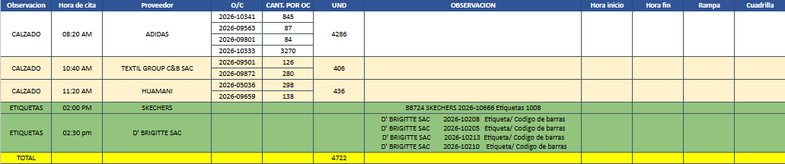

Programado · citas
5.128
8 citas de nacional · 3 por revisar
Verificado · nacional
109.024
100% de lo anunciado
Verificado · importación
0
ese día no entró importación
Matriculado en buffer
—
falta el informe de movimientos del WMS
Nacional · cita por cita
lo único que se programa: la importación depende del contenedor y de aduana
| Hora | Proveedor | O/C |
Programado | Verificado | Buffer |
| 08:20 | ADIDAS | 2026-10341 | 845 | 4.207 | — |
| | 2026-09563 | revisar | 377 | — |
| | 2026-09801 | revisar | 476 | — |
| | 2026-10333 | 3.270 | 100.146 | — |
| 10:40 | TEXTIL GROUP SAC | 2026-09501 | 126 | 630 | — |
| | 2026-09872 | 280 | 840 | — |
| 11:20 | HUAMANI | 2026-05036 | 298 | 1.840 | — |
| | 2026-09659 | 138 | 508 | — |
| TOTAL | 5.128 | 109.024 | — |
El correo, tal como llegó

La tabla viene como imagen y el robot la lee. Lo que no pudo leer sale marcado
revisar y se corrige acá mismo, con la foto al lado.
El cruce cierra: esas 8 órdenes explican los 109.024 pares que entró nacional
ese día. El 100%. Nada de lo que llegó quedó fuera de una cita, y ninguna cita quedó sin llegar.
Pero la unidad no es la misma. La cita dice 845 y por esa orden entraron 4.207 pares.
Pasa en todas: 126 contra 630, 280 contra 840, 138 contra 508 — entre tres y seis veces.
¿La cantidad de la cita va en cajas o bultos? Si es así, la comparación se hace
convirtiendo y no restando, y necesito el dato para poner el fill rate.
Y su propio total no cuadra: las ocho citas suman 5.128 y la fila TOTAL del
correo dice 4.722. La diferencia son exactamente los 406 de TEXTIL GROUP, que
quedaron fuera de su suma.
Importación · ASN por ASN
acá no hay cita: se mide contra lo que anuncia el ASN
El 3 de setiembre no entró importación. Un día con contenedor se ve así:
| ASN | Sociedad |
Anunciado | Verificado | Falta | Buffer |
| 20260905901BA.7616423 | BA | 6.820 | 6.820 | 0 | — |
| 20260905901BA.7618323 | BA | 3.395 | 3.395 | 0 | — |
| 20260832101VM.5616448 | VM | 294 | 294 | 0 | — |
| 20260905901CE.7618323 | CE | 288 | 288 | 0 | — |
| … y 51 ASN más |
| TOTAL · 55 ASN | 192.918 | 192.918 | 0 | — |
Ese día (2 de setiembre): Otros 67.580 · Weinbrenner 34.899 · B.G Licenses 150 ·
Adidas 89 · Puma 85 · Skechers 32.
La columna que falta
El buffer. Es la que cierra tu regla: lo verificado tiene que cuadrar con lo
matriculado. Hoy no se puede medir con lo que hay — el buffer rota más rápido que las dos
fotos de stock del día. Medido sobre 59 fotos desde el 6 de agosto, el 70% de las
matriculaciones las vio una sola foto, y contra lo verificado el buffer capta entre el
2% y el 76% según el día. Puesta así, esa columna nunca cerraría, y sería culpa de la
medición y no del almacén.
Necesita un Web Report de movimientos de inventario en el WMS: la tabla que registra
cada matriculación con su LPN, ubicación, usuario y hora. Es el mismo camino por el que armé
el informe del ASN — unos minutos en el WMS y una bajada.